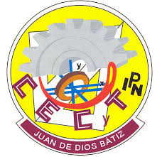

Jose Roberto Delena Caballero
Telefono de contacto: 310 202 2292
Ubicacion: mi casa
Correo electronico: jdelenac2300@alumno.ipn.mx
Telefono de contacto: 310 202 2292
Ubicacion: mi casa
Correo electronico: jdelenac2300@alumno.ipn.mx
Soy un estudiante del cecyt 9 "Juan de dios batiz " el cual esta estudiando la carrera tecnica de programacion al cual le gustan las cosas relacionadas con la informatica y le apasiona el programar y aprender nuevas tecnologias
Centro de Estudios Cientificos y Tecnologicos "Juan de Dios Batiz" ,Educacion media superior 5 semestre
